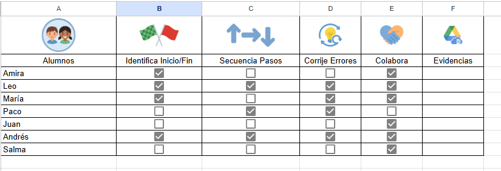
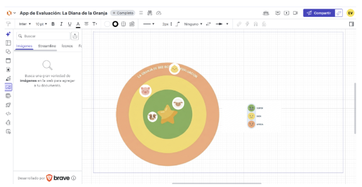

7. Evaluación: Criterios e Instrumentos (Tarea 8.1)
En esta Situación de Aprendizaje, la evaluación es un proceso formativo, continuo y compartido. No buscamos una calificación tradicional, sino registrar el progreso del alumnado en su competencia digital, el pensamiento computacional y la adquisición de hábitos saludables.
A continuación, se presentan los instrumentos diseñados y las instrucciones para que cualquier docente pueda replicar este sistema de evaluación en su aula.
📊 7.1. Instrumento Docente: Lista de Cotejo Digital (Google Sheets)
Diseñada para la observación sistemática y directa durante las misiones con el Bee-Bot. Permite registrar el desempeño de cada alumno y equipo de forma ágil desde una tablet o smartphone a pie de aula.
- 🔗 Acceso a la plantilla editable: Plantilla de la Lista de Cotejo en Google Sheets
- Funcionamiento: He configurado casillas de verificación (checkboxes) para anotar variables como 'Identifica Inicio/Fin', 'Secuenciar pasos', 'Corregir Error' y 'Colaborar'.
- Análisis de datos: La hoja incluye una fórmula automatizada que calcula instantáneamente el porcentaje de éxito de la clase para cada item. Esto me permite, por ejemplo, detectar si la variable 'Secuenciar Pasos' tiene un porcentaje bajo y decidir inmediatamente reforzar esa habilidad en la asamblea antes de la siguiente sesión. El uso de $ en la fórmula fija el total de alumnos, asegurando que el cálculo sea correcto aunque la lista de clase cambie.
📸 Vista previa del Instrumento de Evaluación:
(A continuación, se muestra la estructura visual de la matriz de evaluación y los indicadores que debe observar el profesorado):

🎯 7.2. Instrumento del Alumnado: Diana Interactiva (Lucidspark)
Fomentamos la autoevaluación y la metacognición desde los 3 años mediante un entorno visual y táctil en la pizarra digital o tablet.
- Adaptación DUA y Privacidad: Se aplica el “bloqueo de objetos” en Lucidspark. Los niños solo pueden mover su avatar de animal (protegiendo su identidad real), evitando que borren el fondo por error, facilitando la experiencia a alumnos con dificultades motrices como Leo o barreras lingüísticas como Amira. La diana utiliza iconos claros y divertidos (Salud,
Cuidado del Robot y Trabajo en Equipo) para que niños que no leen entiendan las variables. - Funcionamiento: Los alumnos arrastrarán su avatar (un gomet digital) hacia el círculo concéntrico que mejor represente su percepción de logro. El centro (la estrella) representa el máximo éxito. Esta mecánica facilita la accesibilidad cognitiva y motriz para Leo y Amira. Los datos obtenidos no buscan una calificación, sino iniciar un diálogo reflexivo (feedback cualitativo) con el grupo sobre la importancia de aspectos actitudinales y de salud digital (ej. los descansos visuales).
👩🏫 7.3. Guía de Reutilización: ¿Cómo evaluar a tu alumnado con este eXeLearning?
Si eres el docente que va a reutilizar esta Situación de Aprendizaje, sigue estos pasos para realizar el registro individual de cada alumno de forma eficiente:
- Preparación del registro individual (Antes de empezar): Haz clic en el enlace de Google Sheets provisto arriba y selecciona Archivo > Hacer una copia. Esto creará una versión privada en tu Google Drive donde podrás sustituir los nombres de los alumnos por los de los alumnos de tu propia clase.
- Registro durante la sesión (Evaluación continua): Mientras los alumnos juegan por parejas en el suelo con el Bee-Bot, abre la hoja de cálculo desde una tablet o móvil. Solo tienes que marcar con una “X” o un “SÍ” si el alumno cumple el indicador (por ejemplo, si realiza la pausa de parpadeo visual o si borra la memoria del robot). La hoja calculará automáticamente el porcentaje de logro de cada niño y coloreará los éxitos en verde.
- Captura de Evidencias y Cierre (Registro del Portafolio): Al finalizar la última misión, haz una captura de pantalla del lienzo de Lucidspark con la diana rellenada por tus alumnos. Guarda esa imagen junto con el PDF de la lista de cotejo en una carpeta de Google Drive dedicada a tu grupo.
- Comunicación familiar: Sube la captura de la diana de autoevaluación y una foto anónima del equipo programando a tu plataforma de comunicación oficial (como iPasen o la que use tu centro) para informar a las familias del progreso en salud digital de sus hijos.
